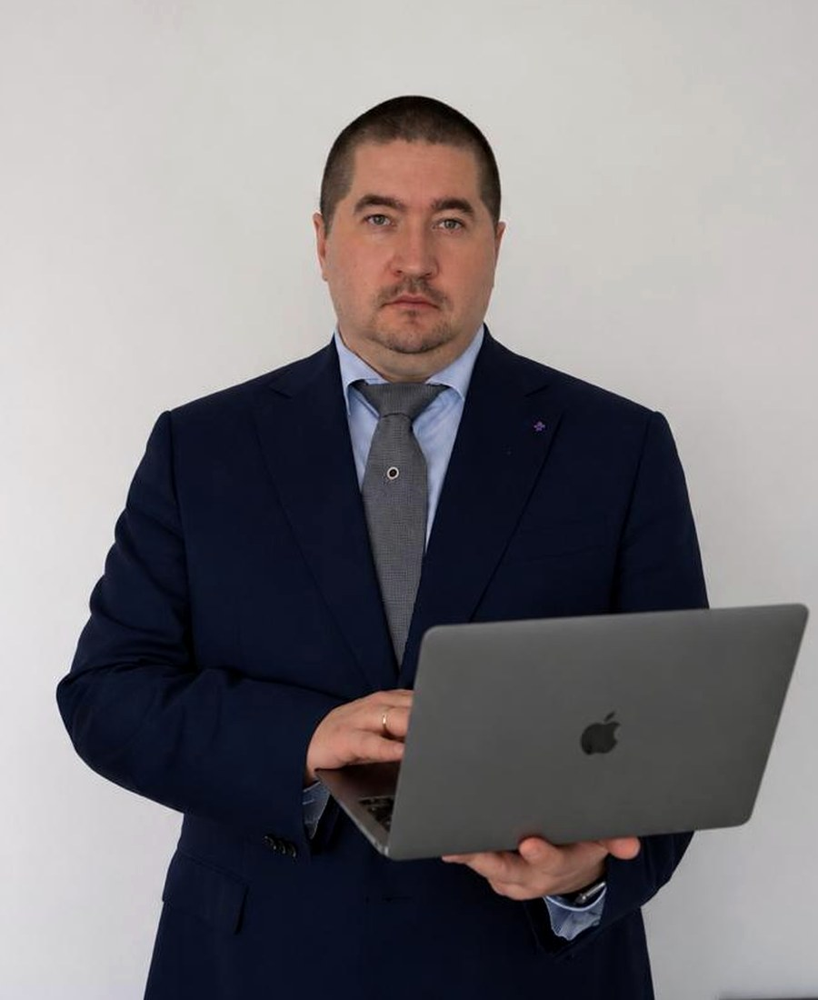

Юрист в Красногорске · Московская область
Юрист в Красногорске: гражданские и трудовые споры, медицинское право
Веду споры и сопровождаю бизнес. До юридической практики двенадцать лет руководил компаниями, поэтому смотрю на вопрос так, как его видит собственник: сколько стоит ошибка и как её не допустить.

Кратко
Антон Штин - юрист из Красногорска (Московская область), ИП Штин Антон Владимирович, ОГРНИП 320246800028048. Направления: гражданские споры, трудовые споры, медицинское право для клиник, юридическое сопровождение малого и среднего бизнеса. Работает с гражданами и компаниями: претензии, иски, представительство в судах общей юрисдикции и арбитражных судах, проверка договоров. Очно - Красногорск, Москва и Московская область, дистанционно - по всей России.
Услуги
С какими задачами ко мне приходят
Гражданские споры
Юрист по гражданским делам
Должник не платит, страховой выплаты не хватило на ремонт, продавец не возвращает деньги?
Подробнее →Трудовые споры
Юрист по трудовым спорам
Зарплату платят не полностью, не индексируют или уволили с нарушениями?
Подробнее →Медицинское право
Юрист по медицинскому праву для клиник
Страховая сняла оплату по ОМС, пациент требует вернуть деньги, договор платных услуг устарел?
Подробнее →ДТП
Юрист по ДТП
Страховая заплатила меньше ремонта, виновник не отвечает, после ДТП составили протокол?
Подробнее →Сопровождение бизнеса
Юридическое сопровождение бизнеса
Контрагент прислал договор «на подпись», претензию или требование по лизингу?
Подробнее →Подход
Сначала - честная оценка, потом - работа
Ещё до договора вы узнаёте, есть ли у вас позиция, какие доказательства нужны, сколько займёт спор и во что обойдётся.
- Прогнозирую процессуальные последствия каждого шага: не заявляю того, что ослабит вашу позицию.
- Формулирую требования так, чтобы суд мог исполнить их в решении.
- Сверяю нормы с действующими редакциями законов перед каждым документом.
- Персональные данные клиентов и третьих лиц обрабатываю по 152-ФЗ.
Порядок работы
Четыре шага
Знакомство с ситуацией
Вы присылаете документы или описываете ситуацию в Telegram, по телефону или на встрече.
Оценка и стоимость
Называю перспективы, риски, сроки и цену работы до её начала.
Документы и суд
Готовлю претензии, иски, отзывы, договоры; представляю интересы в суде и на переговорах.
Отчёт
Сообщаю о каждом этапе и следующих сроках, чтобы вы не узнавали новости последним.
Разборы
Как ошибки бизнеса превращаются в суд
Пишу короткие разборы реальных ситуаций - без имён и с нормами: что пошло не так, сколько это стоило и что сделать, чтобы не повторить.
Вопросы
Частые вопросы
Чем вы занимаетесь?
Гражданскими и трудовыми спорами, медицинским правом и юридическим сопровождением бизнеса: претензии, иски, представительство в суде, проверка договоров, документы для клиник.
Где вы работаете?
Очно - в Красногорске, Москве и Московской области, дистанционно - по всей России. Встречи по договорённости, документы можно прислать в Telegram или на консультации по видеосвязи.
Сколько стоят ваши услуги?
Стоимость зависит от объёма и сложности задачи. Я называю её после изучения документов и до начала работы, фиксирую в договоре и не меняю без согласования.
Вы гарантируете выигрыш дела?
Нет. Результат спора определяет суд, и честный юрист его не гарантирует. Я гарантирую другое: трезвую оценку перспектив до начала работы, соблюдение сроков и отчёт о каждом этапе.
Первый шаг
Расскажите, что случилось
Пришлите документы или опишите ситуацию - отвечу, есть ли у вас позиция и что делать дальше.